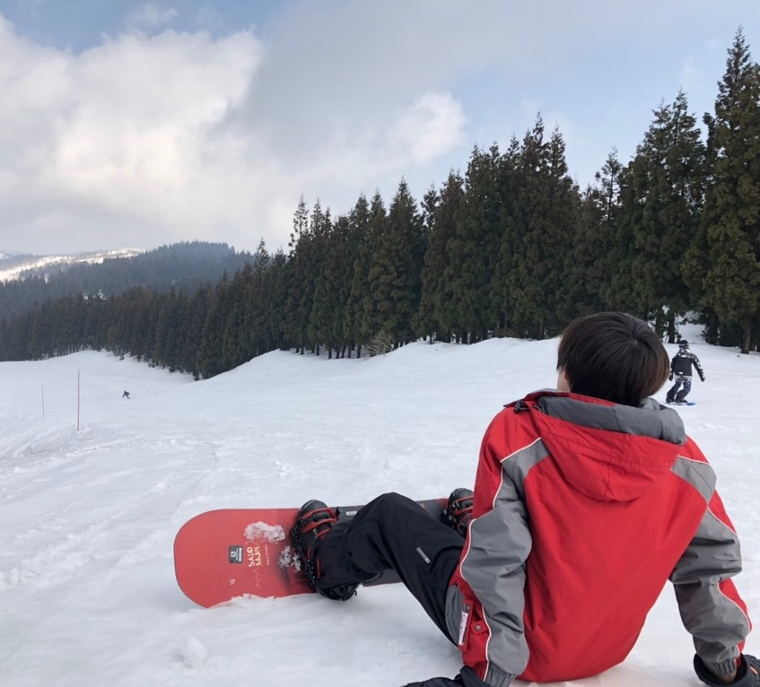

profile

平成9年生まれ23歳の坂尾卓海(@qhnxt6umi)です。
2019年4月から作業療法士として急性期病院で2年間勤務。しかし、仕事に対するやりがい・楽しさを見出せず転職を決意。 人生はリスクを背負ってこそ良き道が拓けると信じ以前から興味のあったプログラミングに思い切って挑戦！
趣味：スノボー・ランニング・読書・旅行
私には夢があります。それは世界中のすべての人が「輝ける場所」を見つけることです。
物や情報に溢れた今の世の中で、ひとりひとりが自己実現できる環境で生きていくことが人生を豊かにできると考えています。 人は社会的な生き物です。職場や学校、家庭などの環境に強く影響されます。その中で周りに流されることなく 自分軸を見失わないことが、あなたを輝かせてより良い人生に繋がります。
平成9年生まれ23歳の坂尾卓海(@qhnxt6umi)です。
2019年4月から作業療法士として急性期病院で2年間勤務。しかし、仕事に対するやりがい・楽しさを見出せず転職を決意。 人生はリスクを背負ってこそ良き道が拓けると信じ以前から興味のあったプログラミングに思い切って挑戦！
趣味：スノボー・ランニング・読書・旅行
〜これまでの制作実績〜
アプリ名： Like-Note（デプロイ済）
今日あったポジティブな出来事３つとその日の気分を記録する日記のようなアプリ。
気分はフェスマークで表現し、日付別に気分の波をグラフとして見ることも可能。
精神科医で作家の樺沢紫苑先生が提唱しているポジティブ三行日記のアプリ版です。
Githubアプリ名：
読書でのインプットを読んだままにしないための本専用アウトプットツール。
読書で気になった箇所や重要な箇所をメモのように残しておくことができます。投稿したものは他人とお互いに共有でき、投稿に対してコメントを残すこともできます。
Github〜まだまだ未熟者のため日々勉強中！〜